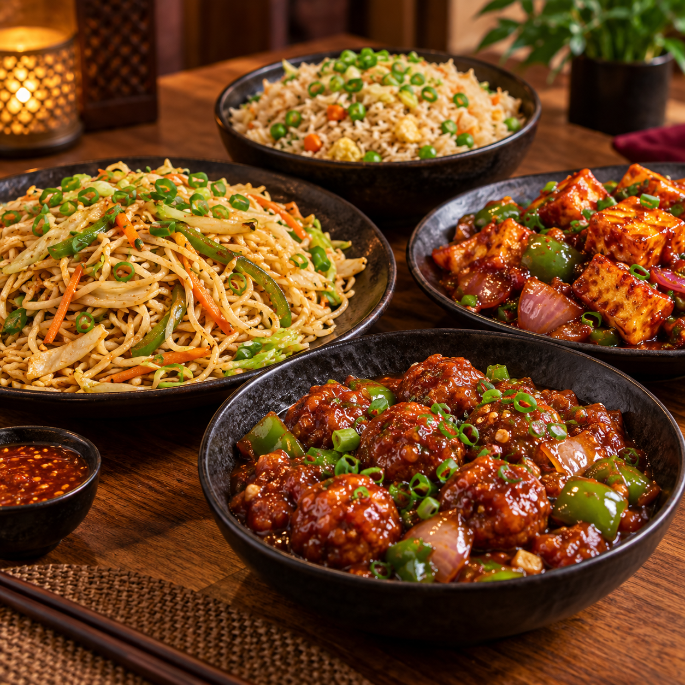
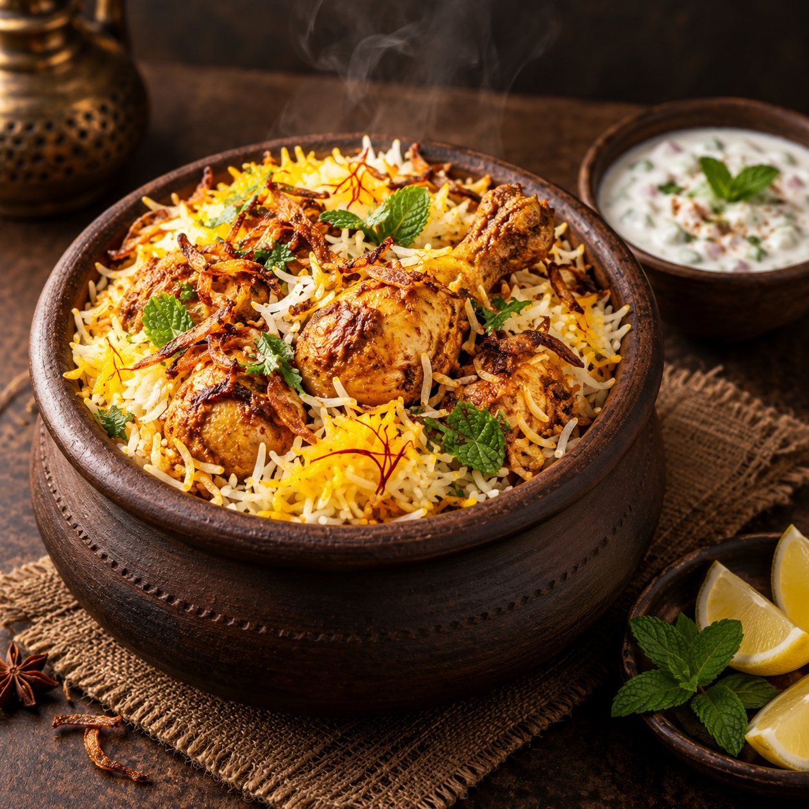

Oriental Flavours
C Food (Chinese Food)
Fiery wok-tossed noodles, crispy fried starters, flavorful Manchurians, and savory sauces crafted with fresh vegetables and meats.
Z-Corner, Manjari Village Road, Lonkar Wasti, Keshav Nagar, Mundhwa, Pune 411036

Discover what makes dining at Ariyan's an unforgettable experience for families, foodies, and celebrations.

Fiery wok-tossed noodles, crispy fried starters, flavorful Manchurians, and savory sauces crafted with fresh vegetables and meats.

Fragrant long-grain basmati rice slow-cooked with sealed dum spices, tender cuts, and caramelized onions, served with cooling raita.

Heirloom recipes featuring our legendary Kala Masala gravies, hearty rassa, and piping hot Jowar Bhakri made with authentic Pune spices.
Succulent kebabs, chicken lollipops, and whole fish char-grilled over flaming earthen tandoors, delivering rich smoky perfection.

Dine amidst lush greenery with peaceful tree canopy views, comfortable breeze, and spacious tables tailored for family privacy.

Host your birthdays, anniversaries, and family celebrations with us. We provide full event hall decoration completely free of cost!
Bold spirits, energetic mixes, and our famous limited-time party offers.

Crafted with real wild black plum (Jamun) pulp, black salt, and a refreshing chilled spirit punch.

The timeless party spectacle—a shot of authentic Jägermeister dropped into chilled Red Bull for an energetic kick.
Handcrafted starters and aromatic main courses prepared fresh to order in our kitchen.
 Crispy
CrispyCrispy fresh Bombay Duck fillets coated with coarse semolina (rawa) and spices, fried to a golden crunch.
 Veg Special
Veg SpecialTender protein-packed soya chaap skewers marinated in yogurt, tandoori masala, and grilled over charcoal.
Chef's SignatureJuicy chicken marinated in aromatic herbs and roasted inside an authentic earthen clay pot for deep rustic flavor.
 Bestseller
BestsellerClassic crispy chicken drumettes brushed with spicy tandoori marinade and charred over red-hot coals.
 Fresh Catch
Fresh CatchWhole fresh Mackerel infused with spicy ginger-garlic coastal rub and roasted with charred edges.
 Crisp & Juicy
Crisp & JuicyJumbo prawns dipped in crisp spicy Koliwada batter or skewered in smoky tandoori coastal seasonings.
 Indo-Chinese
Indo-ChineseSavory vegetable or chicken dumplings tossed in a dark soy, ginger, garlic, and fresh scallion gravy.
 Royal Gravy
Royal GravyVelvety saffron-infused rich cashew gravy simmered with soft paneer cubes or mixed garden vegetables.
 House Special
House SpecialSlow-cooked country chicken prepared with traditional roasted black spices and onions. Irresistible with Bhakri!
 Aromatic
AromaticTender chicken pieces tossed with roasted cumin seeds, fresh cracked pepper, and rich Indian spices.